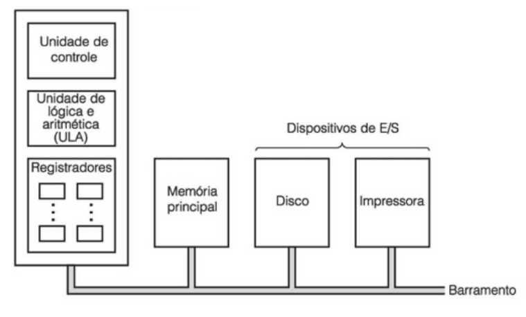
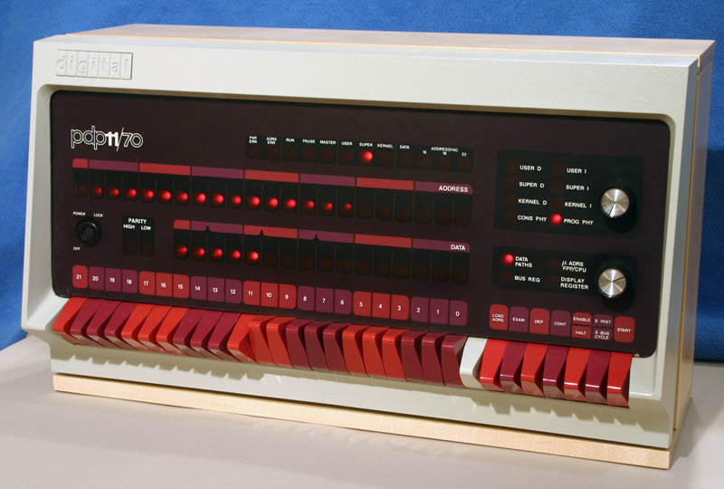
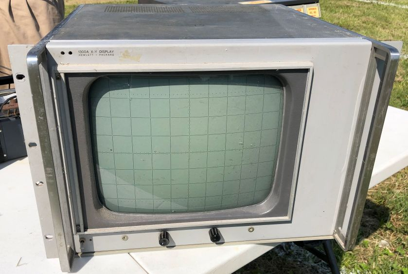
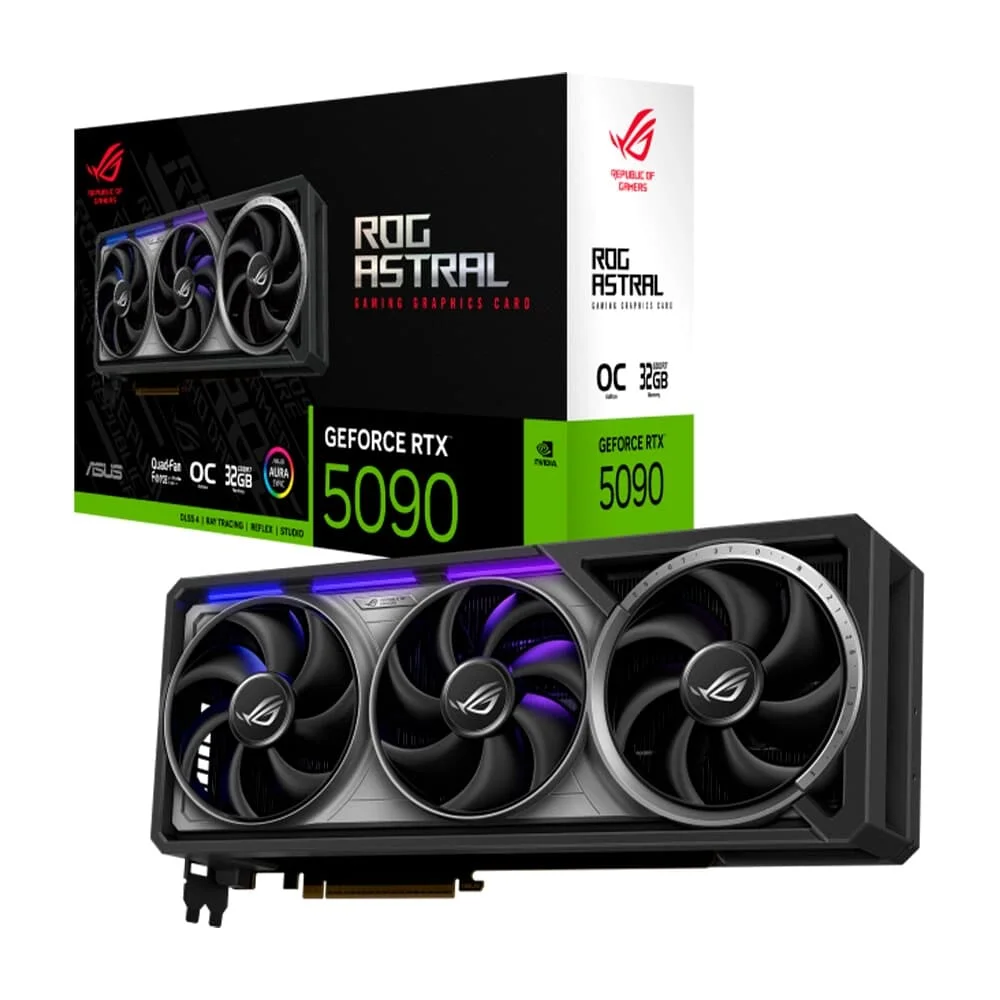
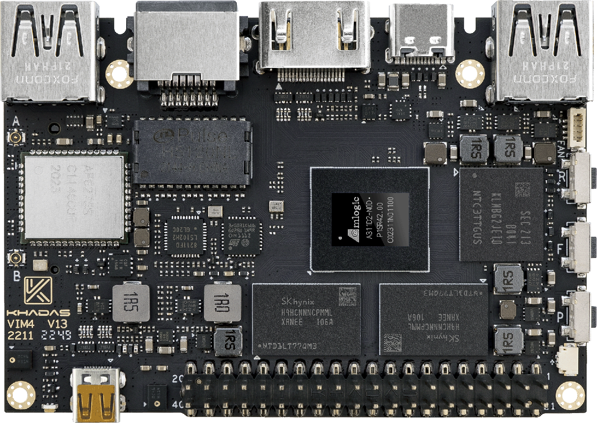
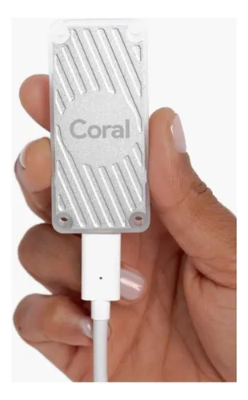
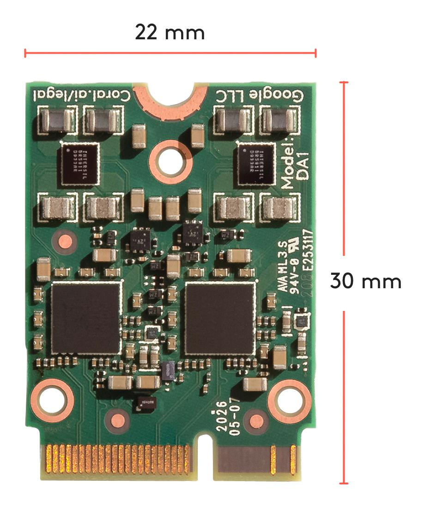

Prof. Me. Gustavo Ferreira Palma

Fonte: Tanenbaum, Andrew S. e Austin, Tood (2013)



NVidia RTX 5090

Khadas VIM 4

Coral USB TPU accelerator

Coral PCI Express TPU accelerator

Organização dos fluxos de execução no TensorFlow Lite
Podem me encontrar aqui: